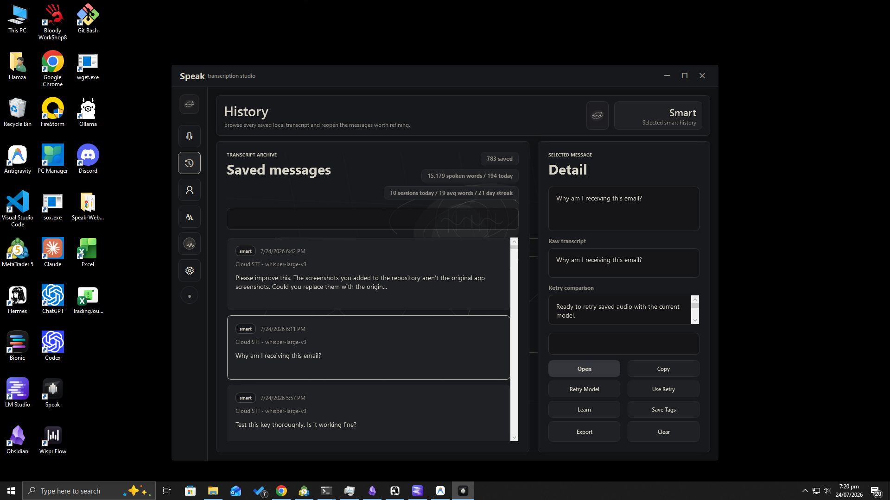

Send the follow-up while it’s fresh
Dictate an email or short message, choose the matching writing mode, then review and deliver it into the Windows app in front of you.
Press one shortcut, talk naturally, and Speak turns it into polished text in the app you’re already using. Run transcription locally or choose your own provider.
Windows 10/11 Local-first Apache-2.0 Pre-release

Speak captures what you mean, cleans it up, and leaves you in control. This exact local-formatting result is covered by the test suite.
i know GitHub and i've tested JSON
I know GitHub and I've tested JSON.
Choose a writing mode, review the editable result, then copy or paste it where it belongs.
Dictate an email or short message, choose the matching writing mode, then review and deliver it into the Windows app in front of you.
Add project names, commands, symbols, and preferred spellings to your personal dictionary for prompts, issues, and documentation.
Capture emails, notes, and drafts by voice when you want to reduce repetitive typing. Review the result before it goes anywhere.
Dictate, refine, build your vocabulary, and keep the privacy boundary visible.
Open the MP4 directlyTalk naturally. Get polished text.
Speak makes the privacy boundary explicit. The engine and polishing options you configure determine what stays on your computer and what goes to a provider.
With local Whisper configured, recorded audio is transcribed by a worker on the same computer. Speak can use its built-in formatter or a configured local LLM endpoint.
Cloud transcription uploads audio to your configured provider. Remote LLM polishing sends the transcript and local draft. Microsoft Edge TTS sends selected text to Microsoft’s online speech service.
The Community release stays open source. The $21 option is a planned supported convenience build; checkout is not live.
Free
Available now$21 once
Planned · interest list onlyNo payment is taken today. Seller identity, checkout, refund terms, exact paid-support scope, support capacity, and entitlement service are not yet configured. The interest form is public—do not post private transcripts, contact details, payment information, API keys, or local paths.
Speak is pre-release software. Its source, privacy boundaries, security policy, checksums, and release materials are public.
Apache-2.0 code and a public issue tracker.
SHA-256 checksums, an SPDX SBOM, and GitHub-hosted provenance attestations.
Build, tests, CodeQL, dependency auditing, and secret scanning.
With local Whisper configured, recorded audio is transcribed on the same computer. Cloud transcription uploads audio to its provider; remote LLM polishing sends the transcript and local draft; Edge TTS sends selected text to Microsoft’s online speech service.
Windows 10 version 1809 or newer or Windows 11 on x64 hardware. Published releases are self-contained, while local Whisper and model-backed TTS require compatible runtimes, model weights, and related dependencies.
Speak is designed to copy or paste finished text into the active app. Automatic paste depends on the target app, permissions, and safety guards. You can copy the editable result manually when automatic paste is unavailable.
Yes. Speak Community is available under Apache License 2.0, and the current Community release can be downloaded without charge. It remains pre-release software.
No. The one-time supported launch is planned, but checkout is not live. The current link is only a public interest form; the paid scope and terms must be configured before payment opens.
Speak’s installer is not currently Authenticode-signed. Verify it against the matching entry in SHA256SUMS.txt and expect Windows to show an unknown-publisher warning.